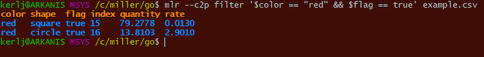
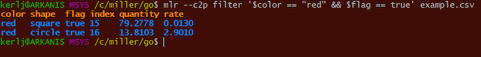

Miller on Windows¶
Native builds as of Miller 6¶
Miller was originally developed for Unix-like operating systems including Linux and MacOS. Since the initial release of Miller in 2015, support for Windows has been partial. But as of version 6.0.0, Miller builds directly on Windows.
The experience is now almost the same as on Linux, NetBSD/FreeBSD, and MacOS.
MSYS2 is no longer required, although you can use Miller from within MSYS2 if you like. There is now simply a single mlr.exe, with no msys2.dll alongside anymore.
See Installation for how to get a copy of mlr.exe.
Setup¶
Simply place mlr.exe somewhere within your PATH variable.

To use Miller from within MSYS2/Cygwin, also make sure mlr.exe is within the PATH variable.
Differences¶
Output colorization doesn’t work on Windows, outside of MSYS2.
The Windows-support code within Miller makes effort to support Linux/Unix/MacOS-like command-line syntax including single-quoting of expressions for mlr put and mlr filter – and in the examples above, this often works. However, there are still some cases where more complex expressions aren’t successfully parsed from the Windows prompt, even though they are from MSYS2:
 

Single quotes with && or || inside are fundamentally unhandleable within Windows; there is nothing Miller can do here as the Windows command line is split before Miller ever receives it.
One workaround is to use MSYS2. Another workaround is to put more complex DSL expressions into a file:
A third workaround is to replace " with """, then ' with ":